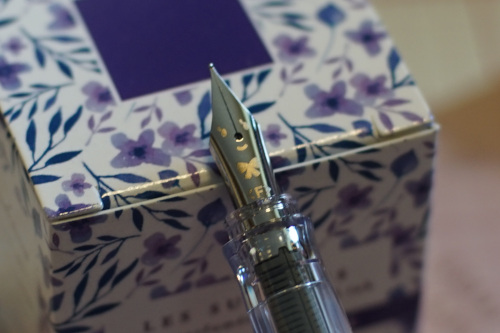

Uniball Jetstream is my favorite ballpoint pen. It feels smooth just like a gel pen!
Other than Jetstream, I don't really enjoy using these. I have ended up with a decent collection of Parker and Cross pens though.
Trying a .38mm Signo was life changing! I've come to really like the Signo line because of it.
I've been swapping refills into my favorite bodies. I have a Little Twin Stars Signo RT1 that I will be putting all my refills in as they run out. I tried just about every refill in my pen and here are my findings. I've found a lot of different brands fit in it, but not Energel. Surprisingly, UMR-83 does fit in Energel bodies!
Compatible: Uni-ball UMR-83, UMR-85, UMR-87, SXR-7 (Jetstream) Zebra JF Sarasa, Papermate InkJoy
Incompatible: Uni-ball UMR-1, LP2RF (Juice), SXR-89 (Jetstream), Pentel Energel LRN7, LR7
I do really like the ink in these. They're very smooth and fun! .5mm doesn't appear in the wild very often though.
.7mm is not "fine". It frustrates me that it's rare to find .5mm and nearly impossible to go lower than that!
I have a super cute kakuno filled with violet scented ink. The nib has a little girl face which is TOO CUTE. absolutely adorable. the pen smells so good. I just love nearly everything about it. I have had trouble with it being finicky which was solved with a cleaning.
My second (impulse buy) fountain pen is a pink pilot petit1. I had no idea these existed until I held one in my hands. The nib appears to be the F version of the disposable Pilot Varsity, which shouldn't excite you. It's scratchy and the tines didn't seem to be aligned after I pulled it out of its little wrapper. It's a $4 pen after all.

The petit1 convinced me that if I want to buy another fountain pen, to buy up, not down. It is a cute little pen but not nearly as enjoyable.
I hate highlighters. I cannot find a use for them other than filling my trash can. If you need to highlight it, you didn't need to write the rest of page. Take better notes.
In high school, I used PaperMate Clearpoint .7 mechanical pencils and switched to Bic Reaction .7 before I graduated. I was able to convince my mom to buy me a graphing calculator for geometry, which was a TI-84 Plus Silver Edition.
In college, I continued to use my Bic Reaction for a couple years, then bought a set of Pentel Twist-Erase GT .7. In my 2nd to last year, I lost my pencil after my Signals and System exam. I'm 90% sure I cried over it! I was so distraught that I went home and ordered a Rilakkuma Uni kuru toga to replace it with money I had made doing a Kaguya Luna commission for a friend. Before my kuru toga arrived, my chronic lab partner told me he had found my pencil after the exam and gave it back to me. Bless.
By the end of high school, I realized how much I hate spiral bound notebooks. The rings just get bent and then they become the largest pain to use! While I was in Seattle, I bought the cutest notebooks I could find at Daiso for notetaking. For homework and anything I had to do on paper, I used a box of dot matrix paper. After returning to the middle of nowhere, I used the cheapest composition notebooks I could find for notes. I had to leave my box of dot matrix paper behind in the move, so I started using paper out of recycling bins and my old lab print outs for homework and scratch paper. I also carried a small metal ruler which I found on a desk and never really used. Could have been handy I guess...
I continued to use my TI-84 for most of college, but my friend and lab partner was particularly partial to the TI-86 and gave me one, which was named "J. Boogard" after the name inscribed on the back. I bought another one at a Goodwill because I liked it so much. It is particularly good at vectors so complex numbers are a breeze! I found a TI-92 in a Goodwill during my last semester and holy cow this calculator is a beast!! I brought it to my Digital Communications Systems final but wasn't fast enough with it, so I switched back to my TI-86. This bad boy can do integrals which is awesome because they constantly slip my mind.
I didn't use pens often in school. I'm sure I carried one with me, but not one of any value. Pens are no good for engineering or math and you cannot change my mind. I always carry an extra eraser though! Sometimes it's just the cute silly ones from Daiso.